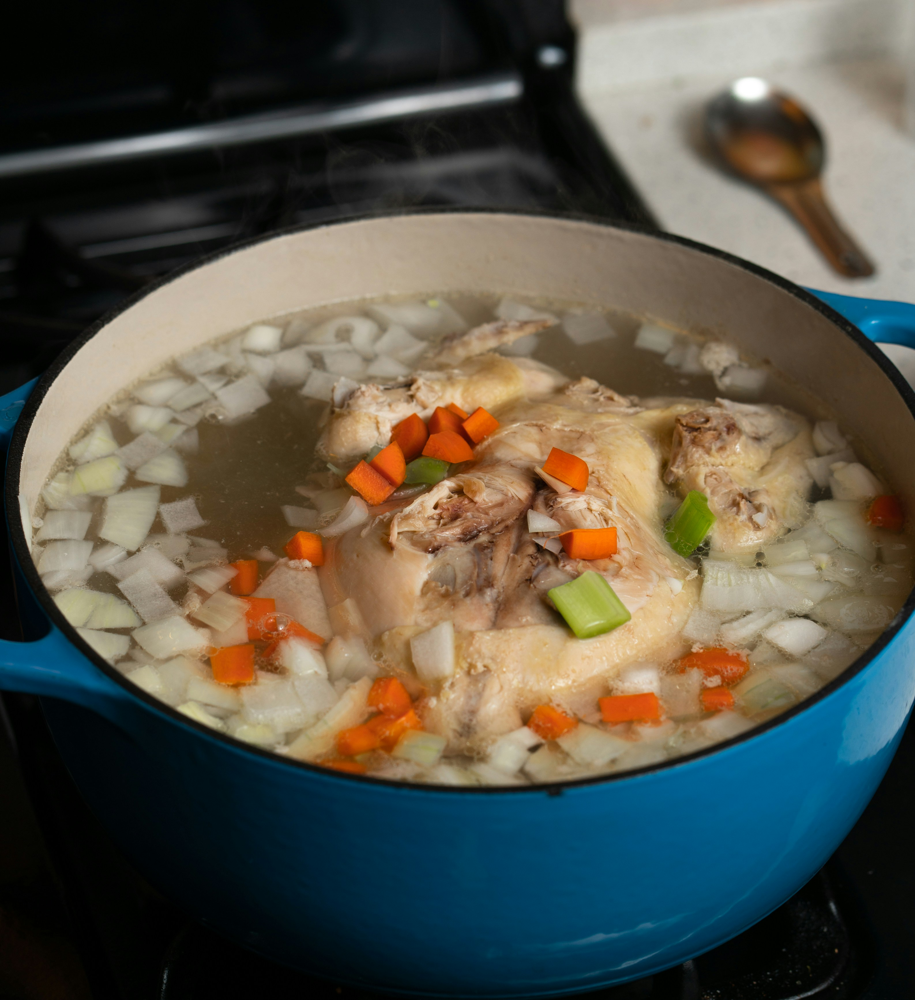

Home

Description
This recipe bring you back to good health!
Ingredients
- 1 lb boneless chicken breasts or thighs
- 2 tablespoons olive oil
- 1 yellow onion, diced
- 3 carrots, sliced
- 3 celery stalks, sliced
- 3 garlic cloves, minced
- 8 cups chicken broth
- 2 bay leaves
- 1 teaspoon dried thyme
- 2 cups egg noodles
- Salt and pepper, to taste
- Fresh parsley, chopped
Directions
- Heat the olive oil in a large pot over medium heat.
- Add the onion, carrots, and celery. Cook for 5 minutes, stirring often, until they start to soften.
- Stir in the garlic and cook for 30 seconds until fragrant.
- Pour in the chicken broth, then add the chicken, bay leaves, and thyme.
- Bring to a boil, then reduce the heat and simmer for 20 minutes, until the chicken is cooked through.
- Remove the chicken, shred it with two forks, and set it aside.
- Add the egg noodles to the pot and cook for 6 to 8 minutes, until tender.
- Return the shredded chicken to the pot and remove the bay leaves.
- Season with salt and pepper, top with parsley, and serve hot.